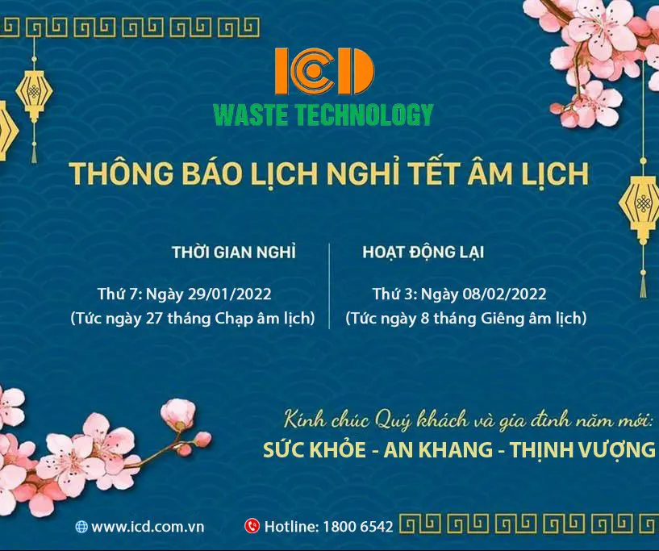
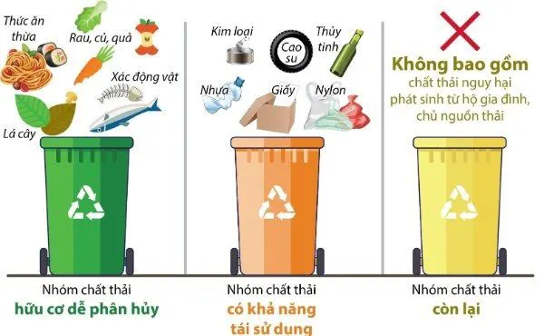
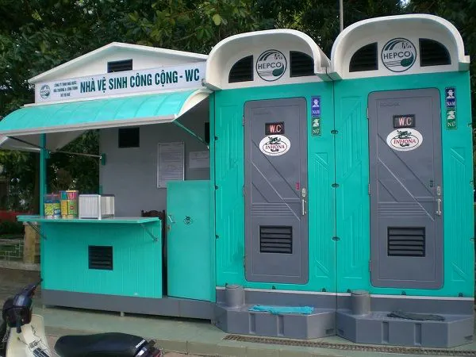
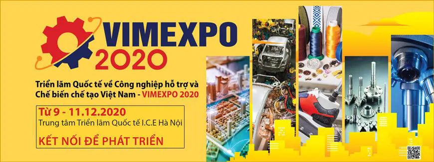

Cập nhật từ ICD
Hoạt động doanh nghiệp, sự kiện và tin ngành môi trường đô thị.

Thông báo nghỉ tết Nguyên Đán 2022
ICD thông báo lịch nghỉ Tết Nguyên Đán Nhâm Dần 2022: nghỉ từ 29/01/2022, làm việc trở lại từ 08/02/2022.
Đọc tiếp →
Hướng dẫn phân loại rác thải sinh hoạt mới nhất hiện nay
Biết cách phân loại rác thải sinh hoạt là điều cần thiết đối với mỗi gia đình. Việc làm này sẽ giúp giảm thiểu sự ô...
Đọc tiếp →
Tiêu chuẩn nhà vệ sinh công cộng nên có diện tích bao nhiêu?
Hiện nay, xây dựng nhà vệ sinh công cộng là điều cần thiết cho sự phát triển của xã hội. Nhà vệ sinh công cộng đảm...
Đọc tiếp →Cách khử mùi hôi nhà vệ sinh công cộng hiệu quả
Nhà vệ sinh là khu vực cần thiết của tất cả gia đình, cửa hàng, siêu thị,... nhằm đáp ứng nhanh chóng nhu cầu sinh lý...
Đọc tiếp →Bạn đã biết sử dụng nhà vệ sinh công cộng đúng cách?
Rất nhiều người cảm thấy không thoải mái khi sử dụng nhà vệ sinh công cộng vì lo ngại về những mùi hôi khó chịu và...
Đọc tiếp →
Một vài hình ảnh gian hàng Máy vệ sinh công nghiệp Fiorentini tại Triển lãm VIMEXPO 2020
ICD giới thiệu máy vệ sinh công nghiệp Fiorentini (Italia) và xe quét Magnum tại Triển lãm VIMEXPO 2020.
Đọc tiếp →
ICD sẽ tham gia Triển lãm Công nghiệp hỗ trợ và Chế biến chế tạo Việt Nam VIMEXPO-2020
ICD tham gia VIMEXPO 2020, triển lãm quốc tế đầu tiên về công nghiệp hỗ trợ và chế biến chế tạo tại Việt Nam, giới thiệu...
Đọc tiếp →
Công ty ICD đón nhận chứng nhận chất lượng ISO 9001:2015
ICD được cấp chứng nhận hệ thống quản lý chất lượng ISO 9001:2015 ngày 20/09/2020 cho các lĩnh vực thiết bị vệ sinh môi trường, cabin...
Đọc tiếp →
Hiệu quả bước đầu của loại hình xe điện 3 bánh thu gom rác ở TP. Cao Bằng
Sau 3 tháng đưa vào hoạt động, xe điện 3 bánh thu gom rác đã thay thế 85% xe đẩy tay tại thành phố Cao Bằng.
Đọc tiếp →